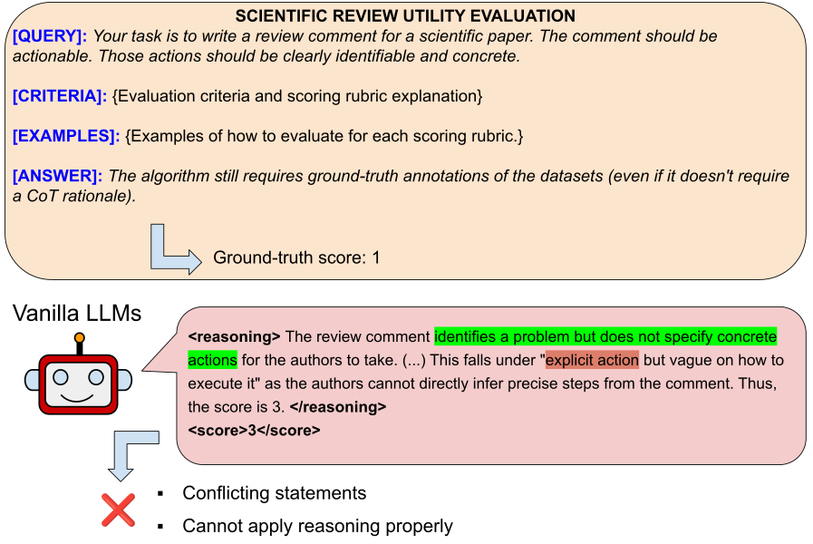
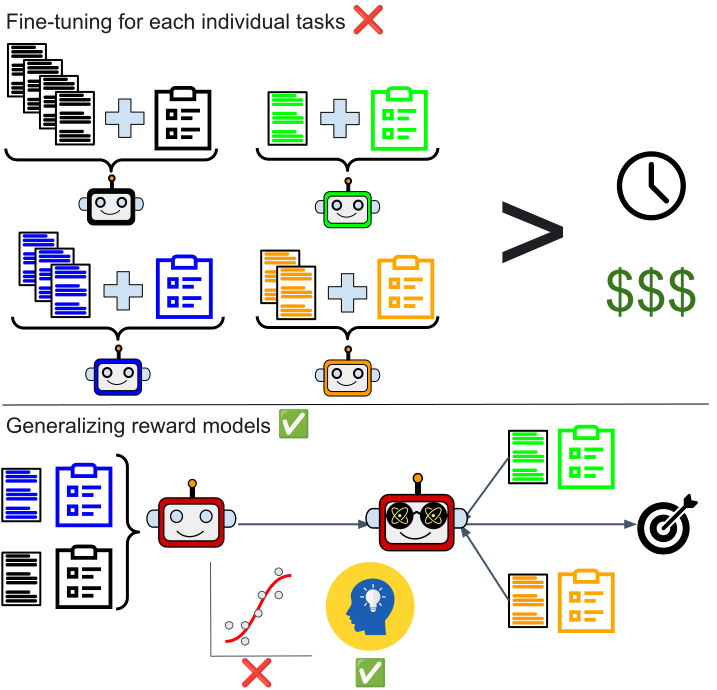
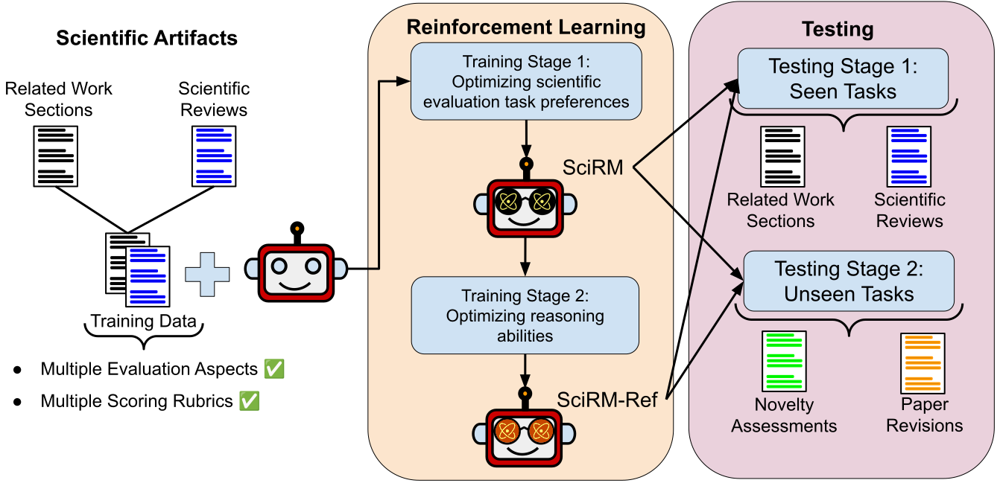
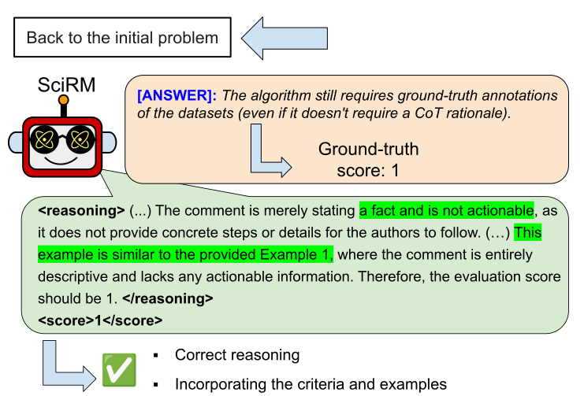
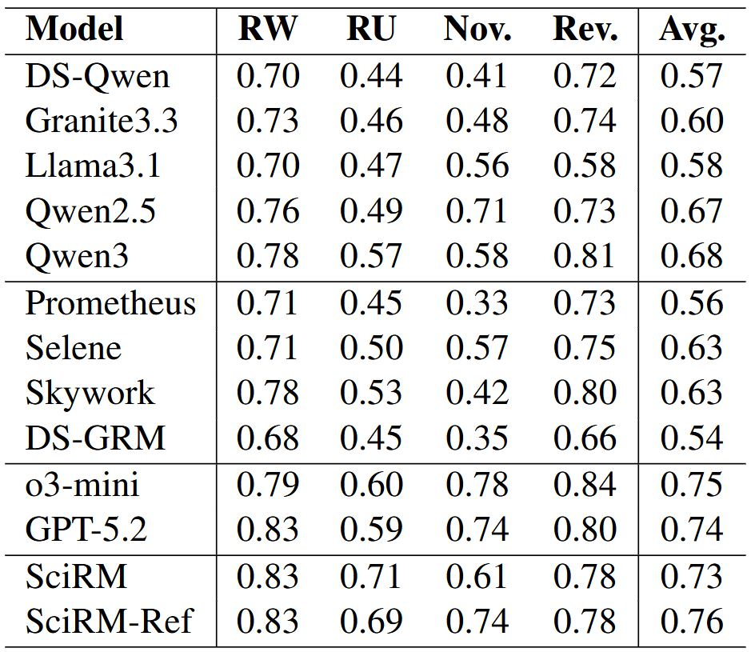

Scientific writing is an expert-domain task that demands deep domain knowledge, task-specific requirements and reasoning capabilities that leverage the domain knowledge to satisfy the task specifications. While scientific text generation has been widely studied, its evaluation remains a challenging and open problem. It is critical to develop models that can be reliably deployed for evaluating diverse open-ended scientific writing tasks while adhering to their distinct requirements. However, existing LLM-based judges and reward models are primarily optimized for general-purpose benchmarks with fixed scoring rubrics and evaluation criteria. Consequently, they often fail to reason over sparse knowledge of scientific domains when interpreting task-dependent and multi-faceted criteria. Moreover, fine-tuning for each individual task is costly and impractical for low-resource settings. To bridge these gaps, we propose cost-efficient, open-source reward models tailored for scientific writing evaluation. We introduce a two-stage training framework that initially optimizes scientific evaluation preferences and then refines reasoning capabilities. Our multi-aspect evaluation design and joint training across diverse tasks enable fine-grained assessment and robustness to dynamic criteria and scoring rubrics. Experimental analysis shows that our training regime strongly improves LLM-based scientific writing evaluation. Our models generalize effectively across tasks and to previously unseen scientific writing evaluation settings, allowing a single trained evaluator to be reused without task-specific retraining.
LLMs has potential in evaluating scientific writing but they (1) lack contextual domain expertise and (2) struggle to reason over the evaluation criteria of scientific writing.

Fine-tuning LLMs for each individual task leads to low generalizability and extremely inefficient in terms of time and money. Instead, we propose cost-efficient reward models across that can generalize across different tasks.

We introduce cost-efficient reward models, SciRM and SciRM-Ref, specifically designed for scientific writing evaluation. We employ two-stage reinforcement learning to optimize the models for (1) scientific writing evaluation preferences and (2) reasoning abilities to better comprehend the given evaluation criteria, enabling models to explicitly reason over and faithfully adhere to dynamically specified evaluation rules.

We evaluate our models on both seen and unseen tasks our models outperform several state-of-the-art LLM-as-a-judge or Reward Model baselines and deliver near–closed-model performance despite having smaller size and being fully open.


Curious to learn more? Our paper covers all the details, including training methodology, evaluation tasks and datasets, ablation studies, and reasoning trace analysis!
@inproceedings{sahinuc2026reward,
title = {Reward Modeling for Scientific Writing Evaluation},
author = {Furkan \c{S}ahinu\c{c} and Subhabrata Dutta and Iryna Gurevych},
year = {2026},
booktitle = {Proceedings of the 64nd Annual Meeting of the Association
for Computational Linguistics (Volume 1: Long Papers)},
month = jul,
address = {San Diego, California, USA},
publisher = {Association for Computational Linguistics}
}